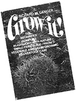
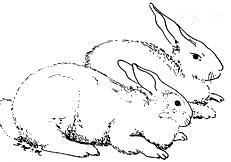
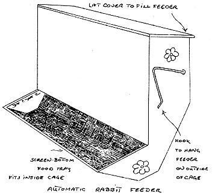
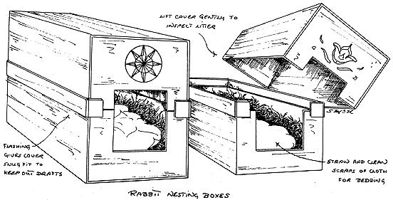
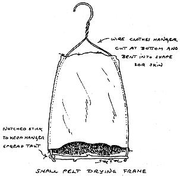

At last! For the first time since the HAVE-MORE Plan was published way back in the 1940's, a fellow named Richard W. Langer has come up with a 365-page book that really introduces a to small-scale farming. Wanna raise your own fruit, nuts, berries, vegetables, grain, chickens, pigs, ducks, geese and honeybees? GROW IT! tells you how to get started and we like it. AND HERE'S A MOTHER EXCLUSIVE! Seems that, somehow, two chapters of the original GROW IT! manuscript were cut from the printed book. Can't say why . . . maybe breeding rabbits and earthworms was just too risque for Saturday Review Press. Doubt it, though . . . probably was a matter of space. At any rate, we've got 'em. Yep. Here they are. Both the chapters that were "too hot" for GROW IT! to handle. If you like 'em, we may even arrange to reprint all the chapters that did make it into the book. Whether we do or not, though, we do recommend GROW IT! to any and everyone interested in small-scale farming.
Rabbits can be a valuable addition to the family homestead. Domestic rabbit meat-while not a staple of the supermarket - is nourishing, sweet, all white and tasty. It doesn't have the gamy flavor of a jack rabbit (which I still prefer) but you don't have to worry about cracking your teeth on stray bird shot when eating the home-grown variety, either.
Where chickens give you feathers for your pillows, comforters and quilts, rabbits produce fur for capes, mittens, rugs and other soft and warm items. A rabbitry is also an excellent source of manure (always a valuable commodity on a small farm).
You'll find it easy to reap this harvest of meat, fur and fertilizer on your own homestead because rabbits are not at all difficult to care for. An adult doe breeds - well, like a rabbit - and produces a litter of six or more three to four times a year. It's no problem to keep a larder well-stocked at that rate.
A good meat is well filled out and firm around the hindquarters and saddle. But it should be neither too stocky nor too long. The former because a very stocky rabbit will tend to have compressed reproductive organs and be unable to bear. The latter because it means more legs, ears and tail - which aren't useful to anybody, including the rabbit, at least in its domesticated state - than in a well-proportioned rabbit.
Several breeds are available, almost all of them good meat producers. If you're thinking of tanning and selling the fur, white usually brings the best price. On the other hand - for your own use - a variety of fur colors adds choice to the design of clothing, throws and rugs.
NEW ZEALAND. One of the most popular breeds, this rabbit comes in White and Red varieties. The New Zealand Red originated from a cross between the Belgian Hare and the Golden Fawn. The New Zealand White developed from mutant. Reds and, for some time, was shunned by meat breeders because people were against eating white rabbits. This, however, is no longer the case. The New Zealand is a hardy breed, producing does of around twelve pounds and bucks that weigh ten.
SATIN. This is a real show rabbit, as well as an excellent fur producer, developed in 1934. Satins are characterized by a uniquely sheeny fur. The Whites are the most popular, but the breed also comes in Blue, Black, Red, Copper, Chinchilla, Havana, California and Siamese. Does weigh in at ten pounds, bucks at nine.
FLEMISH GIANT. The super rabbit, the largest of all kept breeds. Weights of up to twenty-two pounds have been recorded. Ideally speaking, they are best for meat production at around the fifteen-pound level. Still, because of their size, fanciers inevitably vie among themselves to see who can produce the biggest specimens.
There are many other breeds of domestic rabbits. One, Angora Woofers - although not about to run the sheep off the range - even produce "wool." But for the beginner, New Zealands lands for meat, Satins for fur and Flemish Giants for show are more than enough to choose from.
Once you've decided on a breed, buy the rabbits young . . . just after they've been weaned. They're less expensive then and you'll be starting your venture as close to the beginning of the natural breeding cycle as practical. This will give you more of a feel for the animal's needs.
To get your rabbitry rolling won't take much stock. If you purchase adult bunnies, two or three breeding does and one buck will suffice. For newly weaned stock, double that number.
When you're buying a rabbit, check to see that the fur is smooth and even over its entire body. The eyes should be clear and bright (cloudy eyes spell trouble). Healthy rabbit ears are clean and erect (except for the English and the French Lop, whose waistlength ears, of course, are never perky). Both the ears and the feet should be free of sores. The nose should be dry, not runny.
Although climatically adaptable enough to be raised in any area of the U.S.A., rabbits must have houses, or hutches to protect them from rain and extremes of cold or heat.
In mild climates a five-sided wire cage with a substantially overhanging wooden roof affords protection enough from rain and intense sun. In colder climates, only the front and bottom of the hutch are of wire mesh, the other sides of wood. Whichever design is called for by your environment, remember that rabbits - as opposed to, say, chickens - require individual housing.
Hutches can be built in tiers of three or four. But why make work for yourself? Using stacked hutches, you're kept busy cleaning either the cages (if floored) or the trays beneath them. If, however, you arrange your hutches in a single tier - with self-cleaning bottoms made of 1/2-inch meshed wire cloth - the waste material from all the hutches will simply drop through to the ground where it can be readily swept away to the compost heap or garden.
Better yet, integrate earthworm breeding with your rabbit raising by standing the hutches above worm breeding pits. Worms love manure . . . and rabbit is as good as any. The droppings will remain relatively odorless when covered once a week with a thin layer of alfalfa meal, ground hay, paper pulp or any other clean organic scraps you have on hand.
Each hutch will need a manger for feeding hay and green fodder and a trough for pellets and grain mixtures should be placed below or close by the manger. Modern rabbit-keeping leans towards opening the cage as infrequently as possible. To this end, mangers and troughs are usually designed so they can be refilled from the outside. Next to these two provide a water source . . . either a plain crock fitted into a mounting so it can't be knocked over or, preferably, one of the many watering devices available commercially. Like the trough, the commercial waterers can be emptied, cleaned and filled from the outside of a cage.
THE NEST. The only other piece of furnishing needed for the hutch is a nesting box at kindling (birthing) time. The nest should be 12 x 16 inches square and 16 inches high, with an opening at one end large enough for the doe to enter. A removable top or lid will allow you to examine the litter or change bedding when necessary. Place the nesting box, lined with straw and clean scraps of cloth, in the doe's hutch twenty-five days after mating.
Like all animals, rabbits need a balanced diet of high-quality, nourishing food. This feed usually consists of pellets and grain, protein supplement, hay, green fodder, salt and water.
Commercial pellets provide a good diet. But be sure you follow instructions carefully. If you want to make your own grain mix for the trough, try the following basic recipe:
1 lb. whole oats
1 lb. wheat
1/2 lb. crushed corn
1 lb. soybean meal in pellet form
If you have a nursing doe, increase her soybean meal to 2-1/2 pounds per batch.
The grain mix should be constantly available for a nursing doe. Ladle out only about as much as young stock, non-nursing does and bucks will clean up in half an hour.
Each rabbit's manger should be kept stocked with clover or alfalfa hay for roughage and supplemented with a once-daily feeding of fresh greens. Although the animals can survive on prepared foods, greens are rabbits' natural diet and care should be taken that they get some every day. Cabbage, carrots, lettuce and garden trimmings are all eaten with gusto. just remember that, whereas the hay should be there for the taking, a rabbit should not be given more fresh greens than it will finish at one feeding.
Provide each animal with plenty of fresh, clean water. Change it once a day and make certain there's no way the rabbit can accidentally empty the container. A small salt block hooked on the wall of the hutch completes the diet.
Contrary to popular rumor, rabbits are not best picked up by their ears. In fact, picking one up this way can cause it injury and permanent damage. Grasp a rabbit by the scruff of its neck (the loose skin just on top of the shoulders) so that its head is facing away from you. Lift gently as you carefully sweep your free hand under the bunny's rump for additional support.
Rabbits of most breeds are ready to mate when they reach the age of eight months. If, during your daily round, you notice a doe trying to nose and paw her way into the other, hutches - or rubbing her chin on things like the feeder and salt block - take the hint!
Examination of the doe's sexual organ will usually show it to be slightly swollen and purplish in most breeds when she is ready to be serviced. But never take a buck to the doe's cage for mating. Always take the female to the buck's hutch. Does are very sensitive about their quarters and will aggressively attack a visiting buck, sometimes doing him serious harm.
Mating rabbits usually waste no time once they're introduced to each other. And, generally, you'll find it easy to tell when copulation is completed; the buck is apt to flop down in utter exhaustion. Return the doe to her own hutch after service. If the pair doesn't mate the first time, try again the next day. Rarely will it take more than two or three visits.
Keeping a record of matings, litters, weights and fatalities in your rabbitry will help you select the animals to breed for better stock in the future. Whether you choose to keep complete records or not, at least jot down when mating occurs so you can count the days till kindling.
Don't handle a doe when she's pregnant or she may lose her litter. Sudden noises - dogs barking too close, or thunderstorms, for instance - can also sometimes cause the loss of a litter. Should this happen, the doe can safely be bred again in about two weeks.
Kindling normally occurs thirty days after mating. On about the twenty-fifth day, place a nesting box amply filled with soft straw and pieces of clean rags in the doe's cage. She'll build her own nest in the box.
You may notice a decrease in the female's food consumption on the twenty-seventh or twenty-eighth day. Compensate for this by enticing her with more green food . . . as much as she'll eat at least three times a day.
Litters are usually kindled at night. Don't be led by your curiosity to disturb the doe at this time, nor the first day afterwards; if you do, she's likely to disown her young or eat them. On the second day, however, you should be able to check out the inside of the nest. Give it a careful looking over first without touching anything. If there are any dead or deformed young, they should be removed . . . but without touching the others. Keep all your movements slow and smooth and do not startle the doe. If she seems restless, distract her with some food while culling out any dead young.
A doe will nurse her litter for six to eight weeks. As her milk supply decreases, the growing bunnies will teach themselves to eat the feed in the trough and manger. As soon as they're eating completely on their own, they can be moved to individual hutches.
After her young are weaned, a doe should be permitted to rest in her private quarters for a week or so. Feed her normal non-weaning rations - being careful not to give her more grain feed or pellets than she'll eat in half an hour. But - if you're seriously trying to raise your rabbit population or supply meat for the table - don't let her vacation more than two weeks before breeding again. A doe, once bred, will tend to become heavy and lazy if you let her, thereby reducing her propensity to breed in the future.
Rabbits are generally hardy. To keep them that way, make sure their cages are clean and their diet is balanced. Illness, however, can befall even the best-kept rabbitry.
EAR CANKER. One of the most common but easily treated rabbit ailments, canker manifests itself as scabs on the inside (often at the base) of the ear. These scabs are caused by microorganisms which spread rapidly and they must be killed as soon as possible. Treat them when first spotted by swabbing the scabs with mineral oil. Use a fresh cotton swab each time you touch a scab to avoid contaminating the oil bottle. Let the oil remain a few minutes, then pick the scab away with a blunt stick or tongue depressor. Once the scab has been removed, gently swab the sore with alcohol. Cankers are easily controlled if treated as soon as they're noticed.
COLDS. The symptoms - sneezing, runny nose, etc. - are the same as your own. Don't give the rabbit aspirin but otherwise treat it as you would yourself. Shelter the animal from drafts and keep it warm.
SORE HOCKS. This is the ailment that results when the bottom of a rabbit's hind feet become infected. The sores are most often caused by urine irritating the skin and keeping each rabbit's cage clean will usually prevent them. Sometimes all-wire floors also encourage hock sores. If your rabbits seem to have a tendency in this direction, lay an 8-inch or 12-inch board at the back of every cage so each animal can get up off the wire when so inclined. Just be sure you scrub down the board and turn it once a week. You can buy one of several commercially prepared sulfa salves for treating the sores.
Check with your veterinarian or feed store.
MANGE. Hair falling out in patches from infected parts of the rabbit's skin. (Don't confuse mange with the natural, gradual molting which occurs several times a year.) Treat this disorder with the same salve recommended for sore hocks.
SORE EYES. Caused by dampness and draft. Eyes become inflamed and red. Wash them daily, carefully, with a warm solution of one teaspoon boric acid to half a pint of water. Swab with fresh cotton each time to avoid contaminating the solution.
COCCIDIOSIS. Another product of poor sanitation, this disease is spread through the droppings of infected rabbits. It's usually fatal to young rabbits but adults sometimes survive. Still, coccidiosis is the most prevalent cause of death among all rabbits. Symptoms are a perpetual humped-up posture, poor appetite and diarrhea. There is no real cure for coccidiosis. Prevent it with cleanliness.
As a final note, rabbits that have died from disease should never be tossed onto the compost heap or buried, since either action may cause the disease to spread and even revive years hence. Always burn the bodies of diseased animals in a hot fire.
A rabbit matures to eating size about three months after birth. You can count on it dressing out to a little over half its live weight.
The customary and most humane way to kill a rabbit is to dislocate its neck - which breaks the spinal column - in one swift movement. This renders the animal unconscious immediately.
Hold the rabbit's hind legs in your left hand. Place the right hand with the thumb on the neck just behind the ears and the rest of the fingers wrapping around the rabbit's chin. Press down with the thumb, at the same time stretching the animal and quickly snapping its head up. The movements should be fast, smooth and strong to insure quick severing of the spinal cord.
The rabbit punch, derived from the animal of its name, serves the same function . . . and is perhaps better for the amateur who isn't certain just how much force it takes to dislocate a neck. To kill a rabbit quickly and surely with this method, bring a length of 1-inch-diameter water pipe (or something equally heavy) down at a 45 degree angle on the animal's neck.
Remove the rabbit's head at once with a swift chop of an ax. Then hang the carcass upside down from a hook inserted just above the hock between the tendon and bone of a hind leg. Let the rabbit bleed out thoroughly (otherwise the meat will have poor color and texture) and save the blood to sprinkle around the young plants in your vegetable garden. It's a tried and true method of keeping wild rabbits away from your tender buds.
Use a sharp knife to remove the tail, front feet and free rear leg of the rabbit carcass just above the hock. Make an incision in the skin along the inside of the rear legs from hock to hock through the tail cut and carefully separate the skin from the carcass along the edges of this cut.
Try to leave as much fat as possible when you begin to peel the skin down like a folded-over sock. The fat will add taste to the meat and its absence on the skin - or casing, as it's known - will produce a better tanned pelt. Once the skin has been removed, turn it inside out and stretch it over a drying frame. Hang it in a well-ventilated, shady spot to cure.
Take the skinned rabbit from its hook and make a slit down the middle of the belly. Save the liver (which is nourishing and good in gravies) and add the rest of the viscera to your compost heap. Or boil the entrails for fifteen minutes, grind and use them as a food supplement for your pigs or chickens. Remove the remaining hind foot and rinse the carcass under cold running water. It's ready for cooking.
Rabbits are cooked much the same as chickens. Young and tender ones are usually fried or roasted; older, tougher individuals steam-roasted or made into stew or pies.
You should remember, however, that rabbit meat contains very little fat. We hear a great deal about too much fat in our diet; what is not so well-known is that too little can be just as harmful. Hunters lost in Arctic regions have been known to quite literally "starve to death" from a prolonged, exclusively rabbit died (the almost complete lack of fat causing first digestive upset, diarrhea and - finally - death).
Larding and baking or broiling rabbit with a few strips of bacon or pork fat will keep the meat moist and the extra drippings can be made into a very savory white or sour cream sauce to go with it.
When you raise rabbits you'll harvest not only meat and fertilizer . . . but warm clothing as well! It's very easy to tan rabbit skins, and they can be used for anything from coats and caps to furry blankets.
Stretch a "green" hide (one from a freshly killed rabbit) on a frame skin side out. Scrape off all the meat, being careful not to cut the skin. Once the hide is clean you can tan it immediately . . . or, if you want to wait and process a batch of rabbit skins together, rub the hide liberally with salt. Store the skin - stretched - in a well-ventilated, moth-proof place. Once you have a number of skins on hand (they'll be stiff as boards after storage) dampen them all down to soften them.
For tanning, you can use either tannic acid or alum. The latter will give you whiter leather, but the hairs will not hold as well and your coat will be apt to shed like a lap cat when you wear it.
The rabbit skins should be quite moist and pliable before you apply the alum or tannic acid. Stir an ounce of either tanning agent into a little water to make a mixture about the consistency of toothpaste and rub this paste thoroughly into the hides. An old toothbrush will help roughen up the moist skins as you work in the paste; this is to your advantage.
Once the hides are well saturated, turn them so they're the same side out as the rabbits wore them. Stack the skins on top of each other and weight them down with a board.
Let two weeks pass, then turn the hides inside out again and rinse off the extra tanning powder, one skin at a time. By the time the last hide is rinsed, the first should be somewhat dry. Start kneading it in on itself. The longer you rub it, the softer it'll be.
For really professional results, hook up a small electric motor to turn your seed- and feed-mixer slowly and tumble the hides with sawdust for two or three days. The same procedure works fine with goat skins . . . but leave the pig skins on your hams.
|
 FLEMISH GIANT AND CHINCHILLA RABBITS |
 |
 |
|
 |
 |
|